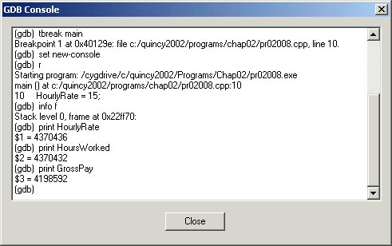

Quincy's IDE integrates the GNU debugger named GDB into Quincy's environment, specifically a modified version of the cygwin port of GDB. The modification permits Quincy to run GDB to debug a console application on Windows 95/98/ME platforms despite a bug in those platforms that gets in the way. If you crave more details, read the C Programming Column in the December, 2002 issue of Dr. Dobb's Journal.
Since Quincy uses the MinGW compiler port, Quincy includes an option to use the GDB that is bundled with MinGW GCC. The debugger selection option is explained in Setting Options You should use this option only if you are working on non-console applications or if your development platform is Windows NT/2000/XP. This version of the debugger is not as current as the other and might give you trouble with complex C++ programs.

This window displays the dialog between Quincy and the GDB command line debugger program. It is of interest only if you understand how to operate GDB from the command line and care to see how Quincy emulates a human user. It is also helpful in debugging Quincy itself. Eventually this window might not be available on distributed versions of Quincy.